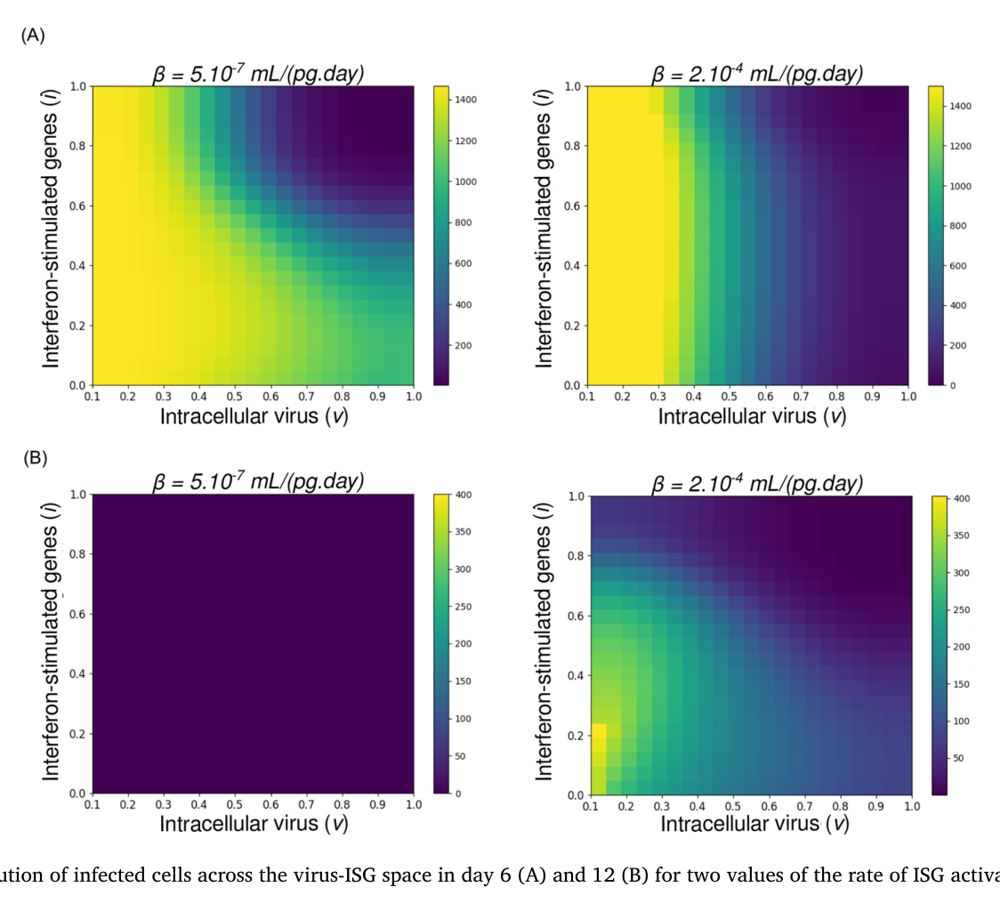
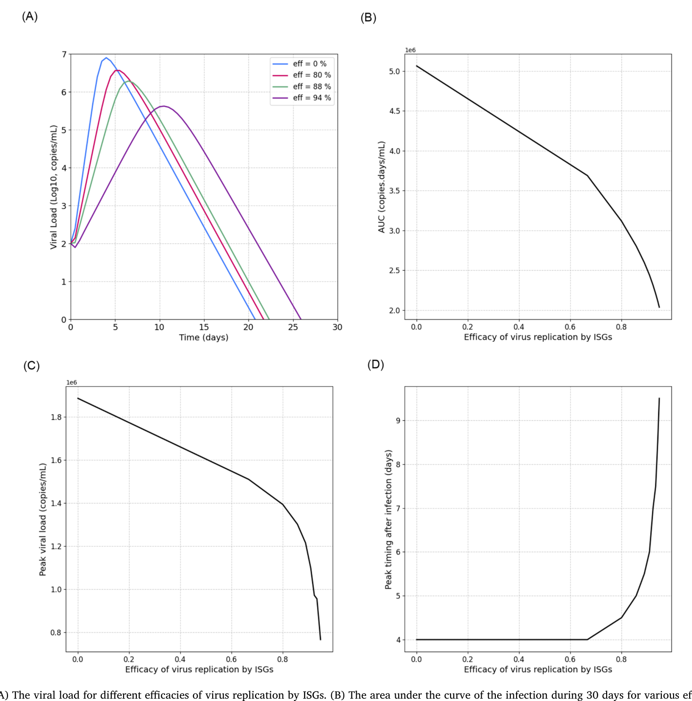

Author-selected published-study numerical panels.
Heterogeneous antiviral states change infection dynamics and the conditions for viral control
In collaborative work, I developed a structured viral-kinetics model in which infected cells vary in intracellular viral burden and interferon-stimulated gene (ISG) expression. Rather than assuming identical infected cells, the model tracks changes in the distribution of antiviral states as infection evolves.
The analysis distinguished how rapidly ISGs are induced from how efficiently they restrict viral replication. The simulations showed that stronger induction alone does not necessarily resolve infection; the downstream antiviral efficacy can be decisive for clearance or persistence.
The central implication is that the effectiveness of intracellular antiviral control may matter as much as the magnitude of the measured immune response. The results motivate closer links between within-host models and experiments measuring cellular heterogeneity.
Bouchnita & Volpert · Journal of Theoretical Biology · 2026 ↗